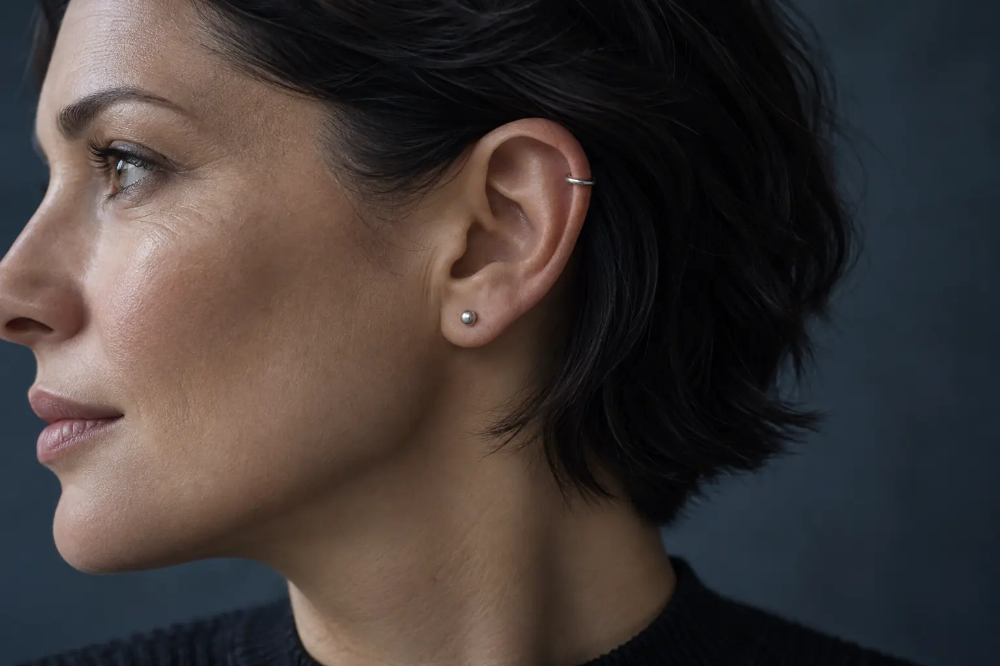
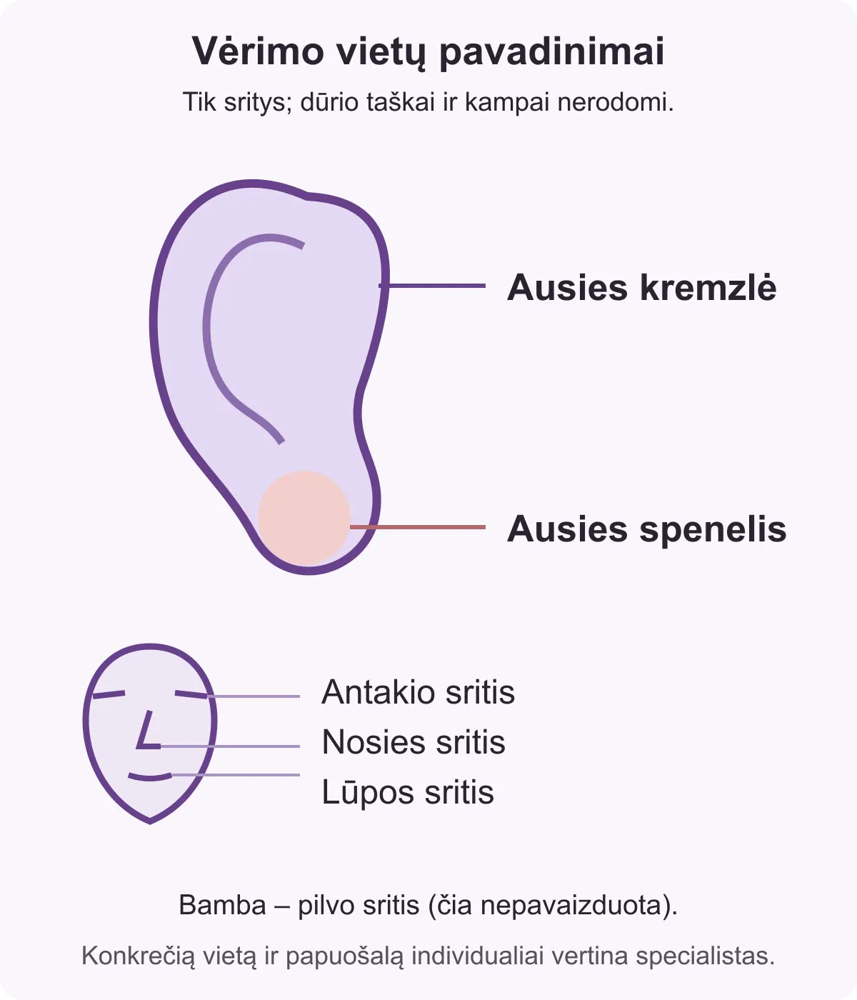

Auskarų vėrimo vietos: ausies spenelis, kremzlė ir kitos sritys
Autorius: Madbeauty redakcija · 2026 m. gruodžio 29 d. 10:00 Lietuvos laiku
Supraskite, kuo skiriasi ausies spenelio ir kremzlės vietos, ką nurodo nosies, antakio, lūpos ar bambos vėrimo pavadinimas ir kaip atskirti vietą nuo paslaugos sudėties.

Vėrimo vietos pavadinimas nurodo kūno sritį, bet ne visą paslaugos pasiūlymą. Todėl spenelio ir kremzlės vėrimas reiškia skirtingas vietas, tačiau pavadinimas nepasako, kokia konkreti vieta ar paslaugos sudėtis siūloma. Šį anatominį skirtumą aprašo išorinės ausies anatomijos aprašas.
Ausies spenelis ir ausies kremzlė
- Ausies spenelis – minkšta apatinė ausies kaušelio dalis, kurioje nėra kremzlės. Šis pavadinimas padeda atskirti spenelio sritį nuo likusio kaušelio.
- Ausies kremzlė – oda dengto kremzlinio karkaso sritis kitoje kaušelio dalyje. „Kremzlės vėrimas“ yra platus vietos pavadinimas; jis nepasako, kuri konkreti kaušelio vieta aptariama.
Abiem atvejais vietos pavadinimą verta skaityti atskirai nuo papuošalo pasirinkimo ir kitų paslaugos sąlygų. Apie audinių ir papuošalo skirtumus plačiau rašo Association of Professional Piercers DUK.

Nosies, antakio, lūpos ir bambos vėrimas
- Nosies vėrimas nurodo nosies sritį, bet vien pavadinimas nepaaiškina konkrečios aptariamos vietos ar papuošalo.
- Antakio vėrimas nurodo antakio sritį. Konkreti vieta ir tai, koks papuošalas įtrauktas į pasiūlymą, turi būti aprašyta atskirai.
- Lūpos vėrimas apima burnos sritį. Papuošalo pasirinkimas čia yra svarbus klausimas: APP nurodo, kad netinkamas papuošalas gali paveikti dantis ar dantenas.
- Bambos vėrimas nurodo bambos sritį, tačiau pavadinimas savaime neapibrėžia konkretaus pasiūlymo, papuošalo ar konsultacijos sąlygų.
Prieš procedūrą verta su teikėju aptarti individualią anatomiją, papuošalą, procedūrą, galimas komplikacijas ir priežiūros informaciją. Tai rekomenduoja APP gairės, ką aptarti renkantis vėrėją; šis pokalbis nėra savarankiškas tinkamumo vertinimas.
Kaip atskirti vietą nuo paslaugos sudėties?
Įsivaizduokite du hipotetinius paslaugos aprašus: „Ausies spenelio vėrimas – papuošalas ir konsultacija įtraukti“ ir „Ausies kremzlės vėrimas – papuošalas bei konsultacija į kainą neįtraukti“. Pirmoji kiekvieno aprašo dalis nurodo vietą, o likusi dalis – paslaugos sudėtį. Tai tik iliustracinis palyginimas, ne Madbeauty pasiūlymas ar teikėjų kainų pavyzdys.
- Pirmiausia išsiaiškinkite, kuri kūno sritis ir kokia konkreti vieta aprašoma.
- Tada atskirai patikrinkite, ar įtrauktas papuošalas, konsultacija ir informacija apie priežiūrą.
- Jei kalbama apie lūpos vėrimą, aptarkite papuošalo pasirinkimą ir jo galimą poveikį dantims ar dantenoms.
Madbeauty nacionaliniame kataloge atskirai pateikti ausų spenelių vėrimo ir ausies kremzlės vėrimo kategorijų aprašai. Tai nacionaliniai kategorijų puslapiai, o ne konkretaus miesto teikėjo ar registracijos patvirtinimas. Miestą ir aktualią teikėjo pasiūlą tikrinkite atskirai.
Susiję gidai
Šaltiniai
- APP · ką aptarti prieš pasirenkant vėrėją · safepiercing.org
- APP · vėrimo audinių ir papuošalo skirtumai · safepiercing.org
- USAARL · išorinės ausies anatomija · USAARL